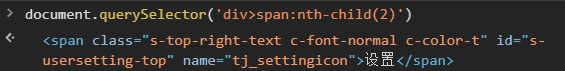
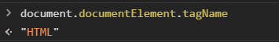
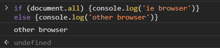
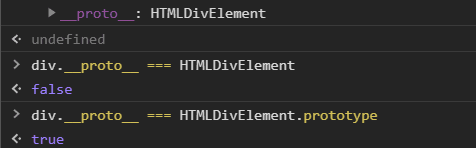
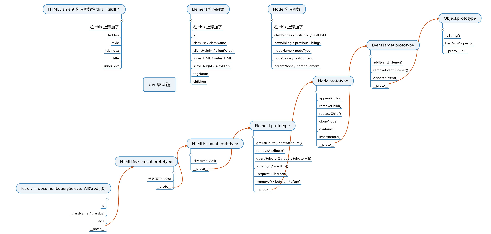
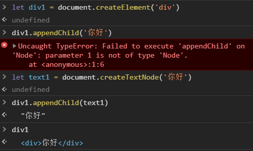
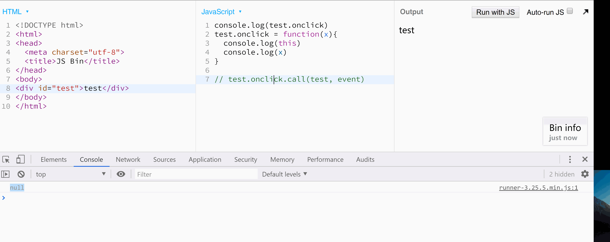
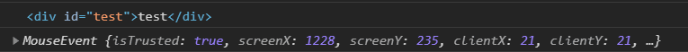
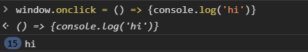

方方-DOM编程
从入门到工作：JavaScript 编程接口
获取 x 元素的 class 属性
- x.className
- x.getAttribute('class')
将 div 的宽度设置为 100 像素
- div.style.width = '100px'
网页其实是一棵树
JS 如何操作这棵树
浏览器往 window 上加一个 document 即可
JS 用 document 操作网页，这就是 DOM
DOM 很难用，自己封装
1 获取属性¶
获取元素，也叫标签
-
工作用：
// querySelector: 80% css语法能用 document.querySelector('#idxxx') document.querySelectorAll('.red')[0]
-
做 demo：
window.idxxx 或 idxxx -
要兼容 IE
document.getElementById('idxxx') document.getElementsByTagName('div')[0] document.getElementsByClassName('red')[0]
获取特定元素
-
获取 html 元素
document.documentElement

-
获取 head 元素
document.head
-
获取 body 元素
document.body
-
获取 窗口 （窗口不是元素）
window
-
获取 所有 元素
document.all
document.all 是第 6 个 falsy 值

2 原型链¶
获取到的元素是个对象：原型链
let div1 = document.createElement('div')
console.dir(div1) // 看原型链
自身属性：className, id, style 等等
-
所有 div 共有的属性

-
HTMLElement.prototype
所有 HTML 标签 共有的属性
-
Element.prototype
所有 XML, HTML 标签 共有的属性
HTML, XML, SVG
-
Node.prototype
所有 节点 共有的属性，节点包括 XML 标签文本注释、HTML 标签文本注释等等
-
EventTarget.prototype
最重要的函数属性是 addEventListener
-
Object.prototype
div 完整原型链
自身属性 和 共有属性

3 节点的增删改查¶
增
1. 创建一个标签节点
let div1 = document.createElement('div')
document.createElement('style')
document.createElement('script')
document.createElement('li')
2. 创建一个文本节点
text1 = document.createTextNode('你好')
3. 标签里插入文本
div1.appendChild(text1)

div1.innerText = '你好' 或 div1.textContent = '你好'
4. 插入页面中
你创建的标签默认处于 JS 线程中
你必须把它插到 head 或 body 里面，它才会生效
// 1
document.body.appendChild(div)
在页面显示插入的节点
document.body.appendChild(div1)
div1.style.position = 'fixed'
div1.style.top = 0
div1.style.left = 0
div1.style.color = 'red'
div1.style.backgroundColor = 'white'
div1.style.fontSize = '100px'
// 2
已在页面中的元素.appendChild(div)
删
-
新方法
childNode.remove() x.remove() -
旧方法
parentNode.removeChild(childNode) x.parentNode.removeChild(x)
改
改属性
-
写标准属性
// 改 class div.className = 'red blue' // 全覆盖 div.classList.add('red')// 改 style div.style = 'width: 100px; color: blue;' div.style.width = '200px'// 大小写 div.style.backgroundColor = 'white' // 改 data-* 属性 div.dataset.x = 'frank' -
读标准属性
// 两种方法都可以，但值可能稍微有些不同 div.classList / a.href div.getAttribute('class') / a.getAttribute('href')div1.setAttribute('data-x', 'test') div1.getAttribute('data-x')getAttribute
<!DOCTYPE html> <html> <head> <meta charset="utf-8"> <title>JS Bin</title> </head> <body> <a id=test href="/xxx">/xxx</a> </body> </html>console.log(test.href) console.log(test.getAttribute('href'))"http://js.jirengu.com/xxx"
"/xxx"
改事件处理函数
-
div.onclick 默认为 null
默认点击 div 不会有任何事情发生
但是如果你把 div.onclick 改为一个函数 fn
那么点击 div 的时候，浏览器就会调用这个函数
并且是这样调用的 fn.call(div, event)
div 会被当做 this
event 则包含了点击事件的所有信息，如坐标
// 当用户点击该 div 时，该代码中的 this 是 div // 当用户点击该 div 时，arguments[0] 是事件相关的信息组成的对象 div.onclick = function(){ console.log(this) console.log(arguments[0]) }


-
div.addEventListener
div.onclick 的升级版，之后讲
改内容
-
改 文本内容
// 两者几乎没有区别 div.innerText = 'xxx' div.textContent = 'xxx' -
改 HTML 内容
div.innerHTML = '<strong>重要内容</strong>' -
改 标签
div.innerHTML = '' // 先清空 div.appendChild(div2) // 再加内容
改爸爸
newParent.appendChild(div)
查
1. 查爸爸
node.parentNode
或
node.parentElement
2. 查爷爷
node.parentNode.parentNode
3. 查子代
// 当子代变化时，两者也会实时变化
// 优先使用 children
node.children
或
node.childNodes
4. 查兄弟姐妹
// 还要排除自己
node.parentNode.children
// 还要排除自己
node.parentNode.childNodes
// 查看老大
node.firstChild
// 查看老幺
node.lastChild
// 查看上一个 哥哥/姐姐
node.previousSibling
// 查看下一个 弟弟/妹妹
node.nextSibling
node.nextElementSibling
5. 遍历一个 div 里面的所有元素
// 用到数据结构
travel = (node, fn) => {
fn(node)
if(node.children){
for(let i=0; i<node.children.length; i++) {
travel(node.children[i], fn)
}
}
}
travel(div1, (node) => console.log(node))
4 DOM 操作是跨线程的¶
浏览器分为 渲染引擎 和 JS 引擎
JS 引擎只能操作 window 对象, object 对象 等
跨线程操作
-
各线程各司其职
JS 引擎不能操作页面，只能操作 JS；
渲染引擎不能操作 JS，只能操作页面
-
跨线程通信
当浏览器发现 JS 在 body 里面加了个 div1 对象，
浏览器就会通知渲染引擎在页面里也新增一个 div 元素。
新增的 div 元素所有属性都照抄 div1 对象
document.body.appendChild(div1) 这句 JS 如何改变页面？

插入新标签的完整过程
-
在 div1 放入页面之前
你对 div1 的所有操作都属于 JS 线程内的操作
-
把 div1 放入页面之时
浏览器会发现 JS 的意图
就会通知渲染线程在页面中渲染 div1 对应的元素
-
把 div1 放入页面之后
你对 div1 的操作都有可能会触发重新渲染
连续操作 div1，浏览器可能会合并成一次操作
<!DOCTYPE html> <html> <head> <meta charset="utf-8"> <title>JS Bin</title> </head> <body> <div id="test"></div> </body> </html>.start{ border: 1px solid red; width: 100px; height: 100px; transition: width 1s; } .end{ width: 200px; }test.classList.add('start') test.clientWidth // 这句话看似无用，实际会触发重新渲染 test.classList.add('end')
属性同步
-
标准属性
对 div1 的标准属性的修改，会被浏览器同步到页面中
如 id, className, title 等
-
data-* 属性
同上
-
非标准属性
对非标准属性的修改，只会停留在 JS 线程中
不会同步到页面里
如 x 属性

Property vs Attribute
- JS 线程中 div1 的所有属性，叫做 div1 的 property
- 渲染引擎中 div1 对应标签的属性，叫做 attribute
区别
- 大部分时候，同名的 property 和 attribute 值相等
- 但如果不是标准属性，那么他俩只会在一开始时相等
- 但注意 attribute 只支持 字符串
- 而 property 支持 字符串、布尔 等类型